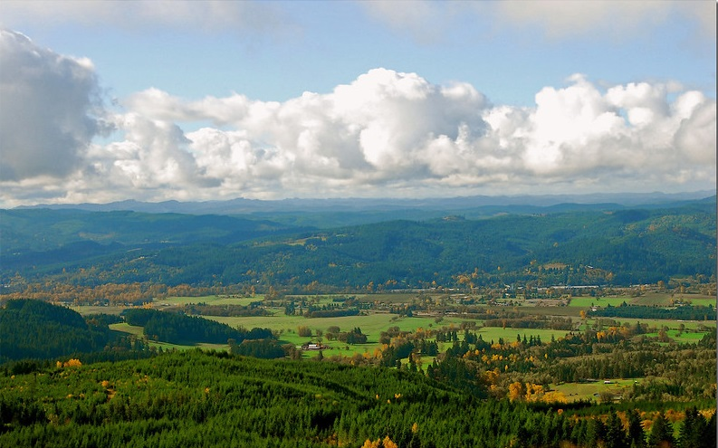
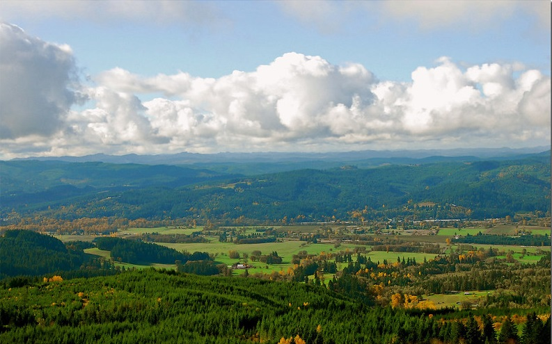

Tricia L. Holman
A.B., Computer Science \
Software Engineering
stormcloud.enterprises @gmail.com
971-264-2643
in the beautiful Willamette Valley of Oregon!

Don Hankins \ "View over Willamette Valley" \
flickr
in the beautiful Willamette Valley of Oregon!

Don Hankins \ "View over Willamette Valley" \
flickr
hi!
A recent graduate from Western Oregon University with an Applied Baccalaureate degree in Computer Science (emphasis on Software Engineering),
this is an overview of my journey and projects.
This is my second time around with college, but first time at the university level. A little more experienced than some of my fellow students, I did not grow up with computers, internet, or the world-wide web being a given in daily life; this gives me a perspective of just how awesome it is, what is possible for us to do, how it is possible to use technology to enhance our lives.
I could not have picked a better major... while I enjoyed all of my classes and projects throughout my college career, it was during Senior Sequence at Western that I realized a shift: homework was no longer just homework, a means to an end, something that had to be completed... this was actually something I loved, that I looked forward to getting back to after a break, something I will happily do for the rest of my life.
I am currently seeking my first job or internship as a software developer\engineer... I hope to find a place where I can bring value to the team, and also be a valued member of the team. So, take a look around, tour my projects, and find out a little more about me. =]
This is my second time around with college, but first time at the university level. A little more experienced than some of my fellow students, I did not grow up with computers, internet, or the world-wide web being a given in daily life; this gives me a perspective of just how awesome it is, what is possible for us to do, how it is possible to use technology to enhance our lives.
I could not have picked a better major... while I enjoyed all of my classes and projects throughout my college career, it was during Senior Sequence at Western that I realized a shift: homework was no longer just homework, a means to an end, something that had to be completed... this was actually something I loved, that I looked forward to getting back to after a break, something I will happily do for the rest of my life.
I am currently seeking my first job or internship as a software developer\engineer... I hope to find a place where I can bring value to the team, and also be a valued member of the team. So, take a look around, tour my projects, and find out a little more about me. =]
find me online!
there is freedom waiting for you
on the breezes of the sky
and you ask "what if i fall?"
oh, but my darling,
what if you fly?
- Erin Hanson
on the breezes of the sky
and you ask "what if i fall?"
oh, but my darling,
what if you fly?
- Erin Hanson
All the stuff.....
Languages & Frameworks:
- C# + LINQ + Razor
- ASP.NET \ MVC5
- Entity \ Identity Frameworks
- HTML5 + CSS3 + the DOM
- BootStrap
- JavaScript \ jQuery
- AJAX + RESTful API's
- PHP
- Java
- Python + pipenv
- Flask
- Visual Basic
- XML + JSON & YAML
- Markdown
- Kotlin
- Haskell
- Database:
- SQL \ T-SQL + DDL
- mySQL
- mongoDB \ Firebase
- Oracle APEX
Other Tools & Experiences:
- Linux from CLI
- Git \ GitHub + Bash
- MS-SQL Server Manager
- pytest + Coverage
- Redis + Celery
- nginx
- connexion + swagger
- Azure Web Apps + DB
- AWS VM's
- VirtualBox VM's
- PuTTY \ SSH
- Postman
- LINQ-Pad
- Pivotal Tracker
- Agile methodology (DAD)
full \ printable resume - .pdf format

Chemeketa Community College \ Salem, Oregon
Associate of Science, Computer Systems & Information Technology
Web Development Track
September 2015 to June 2017
GPA == 3.87
Graduated Magna Cum Laude (GPA==3.87)
Key classes:
- Intro to Programming Concepts
- Elementary \ Intermediate \ College Algebra
- Visual Basic \ Event-Driven Programming
- Operating Systems
- Fundamentals of Web Design & Web Design I
- UNIX\Linux
- Database Development\Management
- Cyber Security\Safety
- Fundamentals of Scripting Languages
- JavaScript Web Programming
- Web Site Development & Web Application Development
- Client\Server & Network Management (3 term sequence)
- Data Communications
- Technical Writing
- Systems Analysis

Western Oregon University \ Monmouth, Oregon
Applied Baccalaureate, Computer Science
September 2017 to June 2020
GPA == 3.59
Recipient, Edward B. Wright Computer Science Scholarship
Graduated Cum Laude (GPA==3.6)
Key classes:
- Intro Computer Science II
- Data Structures
- Computer Organization
- Information Management (more database development\management)
- Ethics & Information Management
- Systems Languages
- Discrete Mathematics I & II, Applied Discrete Mathematics
- Microservices Architecture
- Programming Languages
- Information Assurance & Security
- Operating Systems & Networking
- Algorithms
- Software Engineering I, II, III
- Android Mobile Development
WOU Capstone Project
Senior Sequence ~ Software Engineering I + II + III
Team Nerdvana ~ Tricia Holman + Joseph Tavares & Corrin Moser

Petopia! for the love of pets.
A Pet Care web application for Pet Owners to find Pet Care Providers, and for people to earn a side income by registering as a Pet Care Provider.
Features:
- User registration & login
- Role selection (Pet Owner or Care Provider)
- we plan to implement an option for "both"
- profile creation for Pet Owners, Pets, & Care Providers (including pet photo gallery)
- Pet Care Appointment transaction system (book\request, confirm\decline, reschedule, cancel)
- with email confirmations and on-site notifications for both parties
- appointments logged by user, as well as per Pet for a Pet Owner; divided into "Pending", "Confirmed\Upcoming\Current", and "Finished"
- finished appointments still needing to be rated, commented, and paid; are highlighted so the user can easily find them
- Pet Owner ⇔ Care Provider rate & comment
- Pet Badges (fun way to determine user compatibility)
- proximity finder (using zipcodes)
- payment processing API
- security checks so only the right people can access certain pages
- to keep user data secure\private
- input validation on all forms
- a tabbed user guide — how to use Petopia, FAQ, privacy, user disputes, appropriate content, how to get help if needed
We developed an algorithm combining proximity + rating + badges to calculate a user score,
and then recommend Pet Care Providers to Pet Owners.
Recommendations appear in a scrollable side-panel on a user's profile page, and also when a user searches from our front page.
We followed Disciplined Agile Delivery software engineering practices for Inception and Construction.
As a team, we developed User Stories, descriptions, & tasks; along with all other documentation and modeling.
We used Pivotal Tracker to plan\track our sprints, and used Git(Hub) for version control & team collaboration.
We also set up a team Discord server so that we could keep up with what each other was doing — also making use of
it's integrated voice & video chat feature that included screen-sharing.
Our Academic Excellence Showcase video presentation of Petopia

Hosted at Western Oregon University's Digital Commons
AES Petopia Presentation + Abstract: Thursday May 14th, 2020
Note: At this point, Petopia was incomplete! Due to the global pandemic, with all classes (and pretty much everything else!) going
remote\online with Zoom and all the other tools at our disposal... instead of presenting live at AES on May 28th, everyone had to
prepare a video presentation by May 12th.
So... we transformed from up-and-coming software engineers to videographers for a week to get these presentations ready on time! Even though we were a bit disappointed that our project was not complete, being almost four weeks ahead of our target completion date when we took a week off to produce our demonstration... Team Nerdvana had a lot of fun together making our video and feel like we were able to show the heart and soul of Petopia, along with our affinity for the project.
So... we transformed from up-and-coming software engineers to videographers for a week to get these presentations ready on time! Even though we were a bit disappointed that our project was not complete, being almost four weeks ahead of our target completion date when we took a week off to produce our demonstration... Team Nerdvana had a lot of fun together making our video and feel like we were able to show the heart and soul of Petopia, along with our affinity for the project.
Our Final Technical Presentation for Petopia
Nerdvana -- Petopia Technical Video: Monday June 8th, 2020

Nerdvana -- Petopia Technical Specification Report: Monday June 8th, 2020
For this presentation, Team Nerdvana had completed all six sprints, achieving full basic functionality for Petopia.
We only wish we had another couple of sprints to add in some additional fun features we had initially envisioned — "friends",
a user forum, private/direct messaging, and a few other things!
However, development hasn't fully ended with graduation; as Petopia is something that we want to continue with on a part-time basis. We enjoy working on it, enjoy working with each other, and in so doing, continue to develop skills.
However, development hasn't fully ended with graduation; as Petopia is something that we want to continue with on a part-time basis. We enjoy working on it, enjoy working with each other, and in so doing, continue to develop skills.
Team Nerdvana
Probably the best part of our two-term senior\capstone project was being able to work with Corrin & Joey.
Teams were assigned over Winter Break '19 to start with the first day of Winter Term '20; I'd worked with Joey
previously so was happy with that assignment; and found Corrin to be equally awesome to work with -- he was also
team scrumlord. [=
Microservices Architecture
Term project: extracted activity logging as a microservice from a monolithic web app “Wolfit”
(developed just for our class)… self-taught python on the fly… project included pytest+coverage,
mongoDB (cloud noSQL), writing & calling RESTful APIs (server & client-side), load balancing with
nginx, handling asynchronous calls with redis+celery, using connexion+swagger for API management…
on AWS VM + Linux via Chromebook!
When I locate my screenshots & demos I will post them here!
(project graded incrementally — class=92%)
When I locate my screenshots & demos I will post them here!
(project graded incrementally — class=92%)

Database Management
Term project: designed & developed relational database for fictional “Happy Tails Dog Walkers”,
using MS Access with DDL/SQL… consisted of multiple tables, forms, queries, and reports — plus
a user interface and all documentation, user guide, and ERDs.
(project=100% — class=98.7%)
Database Quick Tour
Database Full Documentation
(project=100% — class=98.7%)
Database Quick Tour
Database Full Documentation

Systems Analysis
Term project: developed & documented plans, business rules, user stories, and diagrams\modeling
to build Happy Tails into a web app… designed to augment & complement existing database to evolve
Happy Tails into a responsive, functional, intuitive, user-friendly web presence.
(project=100% — class=99%)
Project Proposal & Documentation
also, my original portfolio, which was a final project for this class: Chemeketa Portfolio
(project=100% — class=99%)
Project Proposal & Documentation
also, my original portfolio, which was a final project for this class: Chemeketa Portfolio

Information Management
Final [team] project: collaboratively designed & developed relational database for a fictional
wine collector from ground up; using Oracle APEX and writing DDL/SQL… comprising multiple tables,
forms, queries, and reports — plus user interface; drafted all documentation, modeling\ERDs, and user guide.
I need to find where the project files & reports went for this project — when I do I will post them here!
(project=100% — class=97%)
I need to find where the project files & reports went for this project — when I do I will post them here!
(project=100% — class=97%)

Web Design ~ Visual Communications
Final project: from provided specifications, content, images… designed responsive layout,
colors, fonts, navigation, header/footer, asides, etc. for a fictional company website.
(project=91% — class=92%)
Pacific Northwest Expeditions
(project=91% — class=92%)
Pacific Northwest Expeditions
This was another project from that class that was fun for learning layout &
design — key to keeping the user at your site!
Alsea Acres Goat Girls Cheese
Alsea Acres Goat Girls Cheese

Web Application Development
Term project: re-worked a (purposely) poorly designed\developed web app into a responsive,
functional, attractive design… including database interaction with user registration\log-in
and site security using SQL & PHP.
I need to find a host that can handle php scripting before I can put this one back up live!
(project=100% — class=96.7%)
I need to find a host that can handle php scripting before I can put this one back up live!
(project=100% — class=96.7%)
Computer Science II ~ Java
Final project: designed/coded a mini “shopping” app demonstrating GUI, file read/write,
inheritance & polymorphism, try/catch blocks & exception handling. Participated in paired
programming throughout term. First experience with Java (skipped CS I).
(project=100% — class=97.6%)
(project=100% — class=97.6%)

Software Engineering I (jQuery review!)
Lab: I made a little calculator to convert grams to ounces & vice-versa, to help
with nutritional planning and recipes. Designed to evoke a watermelon. [=
(project=100%)
kitchen weights converter
(project=100%)
kitchen weights converter

Software Engineering I (more jQuery)
So this was just a side project that I did along with the one above, and not a
graded project. Enter your numeric birthdate to find your
"Life Path Number" in Numerology!
Numerology — find your Life-Path number!
Numerology — find your Life-Path number!
Software Engineering I (jQuery\AJAX\API)
This was the first version of a project that was refactored to ASP.NET\MVC5. It
pulls up all my GitHub repos with their details — click one to list all of it's
commits with no page reload.
I do need to add media queries — it was originally designed on a large screen and functionality was the primary goal. [=
GitHub Repos \ API project
I do need to add media queries — it was originally designed on a large screen and functionality was the primary goal. [=
GitHub Repos \ API project
Software Engineering I | Color Interpolator
(our 1st ASP.NET\MVC5 project!)
I need to get this one back up and hosted so that I can link to it here. The idea
is that you can enter any combination of values for [Red],
[Green],[Blue] and can
see the resulting color — also see the cascade of colors between two given colors!
As soon as I pull my repos over from the university I will link to the code here, as well.
Color Picker & Interpolator
As soon as I pull my repos over from the university I will link to the code here, as well.
Color Picker & Interpolator
Software Engineering I | Homework Tracker
(ASP.NET\MVC5 project — using data modeling)
I also need to get this one back up and hosted so that I can show it off! Students can
keep track of all their classes, assignments, due-dates\times, and prioritize them.
This would be a good foundation for any kind of tracker — i.e., a To-Do list, Project Planning,
Goal Setting\Keeping, etc.
As soon as I pull my repos over from the university I will link to the code here, as well.
Homework Tracker
As soon as I pull my repos over from the university I will link to the code here, as well.
Homework Tracker
Software Engineering I | Novelty Storefront
(ASP.NET\MVC5 project with a complex pre-existing database)
This app is not live since I need a host that can handle ASP.NET + host my database.
I'm also looking forward to completing it, since I was down with the flu during this
project timeline!
As soon as I pull my repos over from the university I will link to the code here, as well.
Wide World Importers catalog!
As soon as I pull my repos over from the university I will link to the code here, as well.
Wide World Importers catalog!
Software Engineering I | Track Meet Tracker
(ASP.NET\MVC5 project with database we designed and created)
I also need to get this app hosted and would like to continue developing it —
this is a fun one with features that build practical skills.
As soon as I pull my repos over from the university I will link to the code here, as well.
Track Meet Tracker
As soon as I pull my repos over from the university I will link to the code here, as well.
Track Meet Tracker

Canvas \ Fabric: draw-your-house assignment!
This was from JavaScript class at Chemeketa! Not particularly useful, perhaps...
but it is cute and fun, and helped set in some programming concepts! Be sure to click
the front door and especially the lawn!
My house in Canvas — interactive! [=
My house in Canvas — interactive! [=

Guessing Game!
Also from JavaScript class at Chemeketa, and lacking a fun feature -- I could not
find the final version! Yet another little project that is not especially useful,
I suppose — but is also fun! (and taught conditionals, scope, & event listeners!)
What number am I thinking? [=
What number am I thinking? [=

Technical Writing
Term Project: Research, gathering sources, data, & information, and planning informative
visuals to use as we presented the results of our research in the final version of our
Analytical Report.
My chosen topic was on the list of suggested "good topics" from our instructor, but I admit
to having a personal interest in the subject as well; so I learned a lot while putting my
report together, and had more fun than I anticipated with the overall project.
Analytical Report :: Advisability of and Considerations for Pursuing Higher-Level Degrees in Computer Science
Analytical Report :: Advisability of and Considerations for Pursuing Higher-Level Degrees in Computer Science
Algorithms Final Project
Final [Team] Project: I researched and wrote the report while partner Joey Tavares
handled most of the coding, once we had selected an implementation to try.
The culmination of a fascinating term and one of my favorite classes at Western!
Exploring the Traveling Salesman Algorithm
note: still locating project files!
The culmination of a fascinating term and one of my favorite classes at Western!
Exploring the Traveling Salesman Algorithm
note: still locating project files!
Operating Systems Presentations
Final Presentation(s): I took this class twice — the first time there was a death
in the family and I missed too much, so while I passed, I opted to re-take it so
that I could get a better understanding.
Linux File System
Windows File System
note: still locating project files!
Linux File System
Windows File System
note: still locating project files!
Information & System Security Presentation
Systems Languages Presentation
more projects to come!
Other Work Experiences
Myster Shopper \ Compliance Auditor
Business Owner \ Operator
Stormcloud Enterprises ~ Independent Contractor
October 2010 to September 2015
- Completed 1600+ undercover and revealed audits at/for dozens of businesses in Northwest Oregon
- Memorized, and convincingly carried out, a variety of complex scenarios to accurately fulfill shop/audit requirements
- Through objective observation and interactions, evaluated and documented details of customer service, facilities, inventory, presentation, and promotional materials while remaining unnoticed.
- Produced professional, comprehensive reports per client specifications; prepared required documentation and evidence (including photos), in 12 to 24 hour turnaround timeframe.
- Set and managed work schedule; developed spreadsheet to track audits, clients, locations, dates/times, hours, mileage/drive-time, supplies, payments/reimbursements pending and received, tax data.
- My work consistently scored 9 to 10 out of 10 thus attaining preferred status for preferred assignments.
This was the business and income that I developed for myself after being a home-maker for the previous 10 years, when my younger sister pased.
Despite still having sharp secretarial skills; on interviews the fact that my experience was "dated" was always noted, and I was not given a chance...
so, I made my own chances, my own opportunities, and started working for myself.
This was my most-fun "career" to date, and I enjoyed interacting with all of the associates at the businesses I evaluated. It also gave me the opportunities for road trips with my nephews!
This was my most-fun "career" to date, and I enjoyed interacting with all of the associates at the businesses I evaluated. It also gave me the opportunities for road trips with my nephews!
Receptionist \ Phone Operator \ Answering Service
Summer job while doing WOU Math Intensive Summer Courses ~ 2018
- While I took Discrete Math in a summer intensive at WOU!
- Answered 150(+/-) calls per 6-hour shift on weekdays... lower call volume Sundays but increased caller interaction\service
- Handled calls for healthcare; veterinarians; lawyers; residential & commercial services; non-emergency police calls; county\city public service lines, various professional services.
It was fun talking to an always-diverse stream of clientele and providing a friendly interface for local businesses.
Administrative Assistant
Short- & Long-term Temp at various state & county offices
15 months for ODOT Region 2 \ Location Engineering Crew
I really enjoyed being an administrative assistant -- or as we used to be called, a "secretary" -- I loved taking care of
my team and handling everything to faciliate making their jobs easier, and feeling like an integral and valued part of the team.
Volunteer Experiences
American Cancer Society \ Road to Recovery program
As needed the past few Summers -- on hold due to covid pandemic; Driving patients to their appointments & treatments
Meals-on-Wheels driver
Summer of 2016/2017
Plus a number of other experiences, including: courier driving, working a state fair booth, and for a number of years,
being a home-maker for my Dad and younger disabled sister after Mom passed away.
stuff about me
for now, check out
this page to find out what I do for fun
dogs!
music!
^-- me
family!
games!
with family!
cooking!
TV!
- LOST
- X-Files
- Fringe
- King of the Hill
- the ONLY reality TV =]
- Survivor, The Amazing Race, & Big Brother